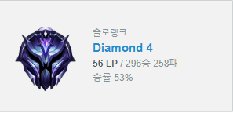
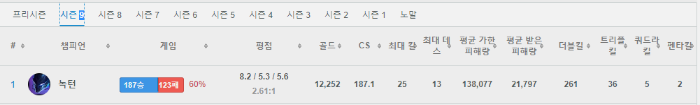

리그오브레전드
컴퓨터게임 league of legend의 약칭⇨lol(롤)
출시된지 10년이 넘었지만 현재까지도 피시방 게임 점유율1위의 자리를 지키고 있을 정도로 과거
스타크래프트 만큼의 인기를 자랑하는 게임이다. 중2때부터 현재까지 약 7년동안 즐기고 있는 게임이다. 그리고 7년간 '녹턴'이라는 캐릭터만 사용해왔다. 메인화면에 있는 작은 캐릭터가 '녹턴'이라는 캐릭터이다.
거의 200개에 달하는 캐릭터들 중에서 이 캐릭만 고집하는 이유는..
게임을 처음 접해볼때 처음으로 고른 캐릭터가 '녹턴'이었기 때문이다. 단지 그뿐이다.ㅎㅎ 그래도 한 캐릭터만 꾸준히 하다보니 이번시즌에는 티어가 다이아 까지 올랐다.(최고 상위0.8%까지 달성..!)

최근에는 친구를 따라서 롤 말고도 다른 게임도 해보고 있는 중이다. 사실 최근들어 롤보다는 와우 클래식을 더 많이 하고 있는데 조만간 홈페이지의 내용이 달라질지도 모르겠다...